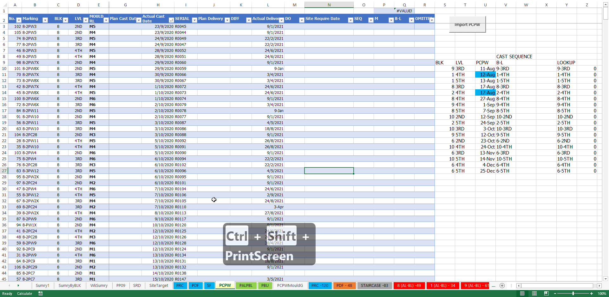

KOMO E-Chart guide import
Back to home page
- Configuration settings
- Open up the master echart copy: 3. 2D PARC KOMO WALLCHART_TARGET.xlsm
- Configuring the settings to use echart so it doesn`t auto calculate the
whole echart. VERY IMPORTANT IF YOU DO NOT WANT TO EXCEL TO LAG.

- Ledges import guide
- Select all the ledges from the e-chart from subcon (Reaplite) and paste into the master echart.

- Go to worksheet PALPBL which stores the ledges info in a table. And press the import button to import details from echart into the table.
- Go to worksheet SumryByBLK and press shift + F9 to calc and see that the ledges precast status has been updated.

- Columns/walls import guide
- Select all the columns from the subcon (Reaplite) e-chart and paste into the master echart.

- Go to worksheet PCPW which stores the columns/walls info in a table. And press the import button to import details from echart into the table.
- Go to worksheet SumryByBLK and press shift + F9 to calc and see that the columns/walls precast status has been updated.

- PRC Refuse Chute import guide
- Copy the details from subcon echart to master echart for refuse chute.

- Go to worksheet PRC which stores the refuse chute info in a table. And press the import button to import details from echart into the table.
- Go to worksheet SumryByBLK and press shift + F9 to calc and see that the refuse chute precast status has been updated.

- PDF Precast Door Frame import guide
- Copy the details from subcon echart to master echart for PDF.

- Go to worksheet PDF which stores the door frame info in a table. And press the import button to import details from echart into the table.

- Go to worksheet SumryByBLK and press shift + F9 to calc and see that the door frame precast status has been updated.